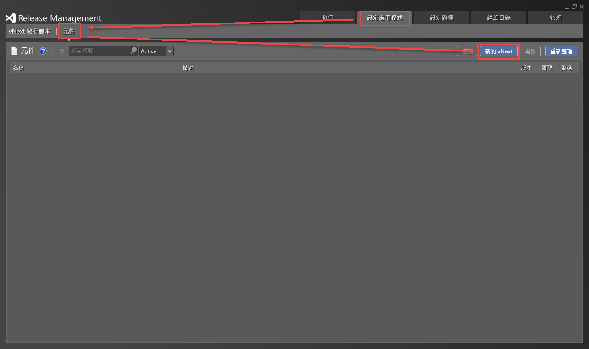
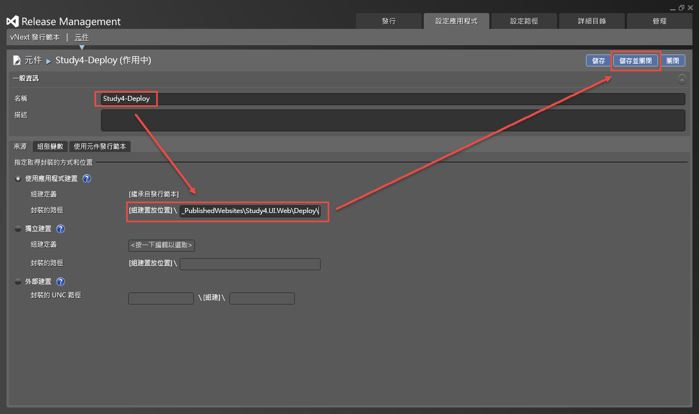
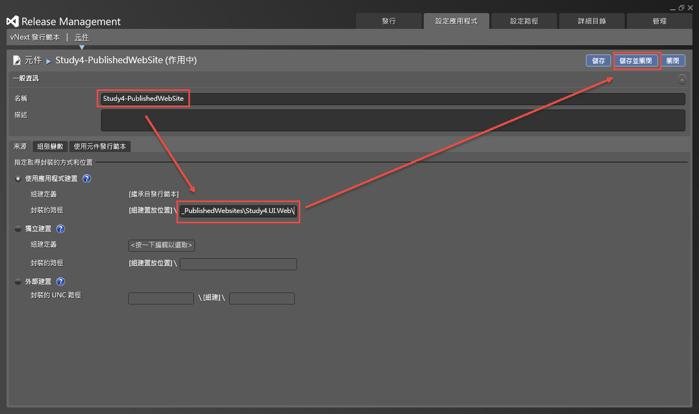
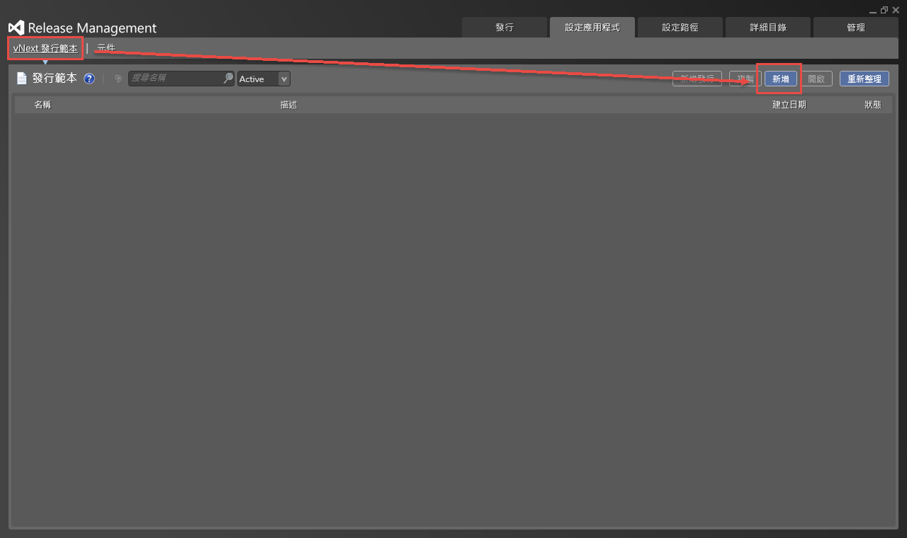
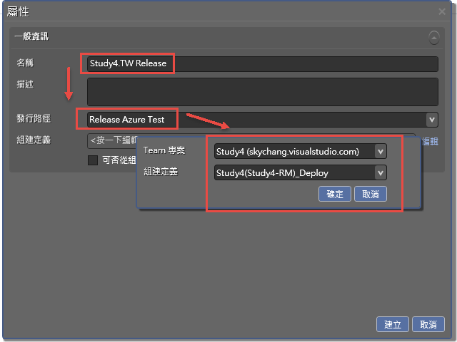
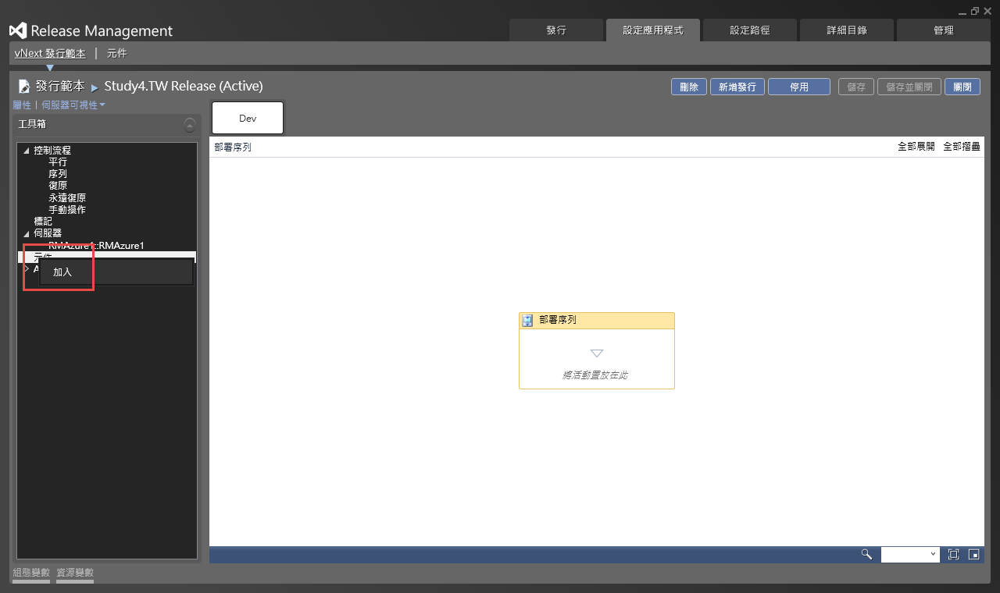
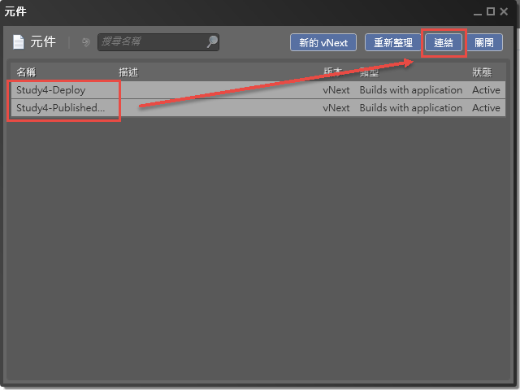
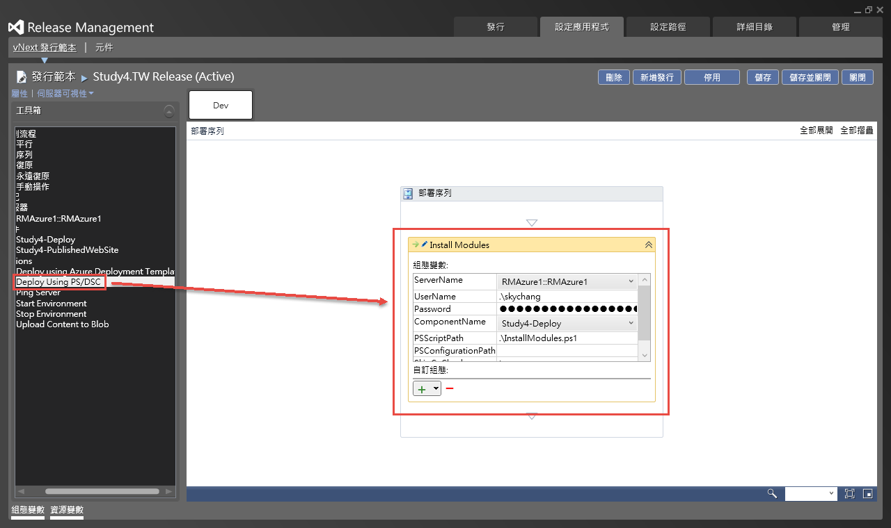
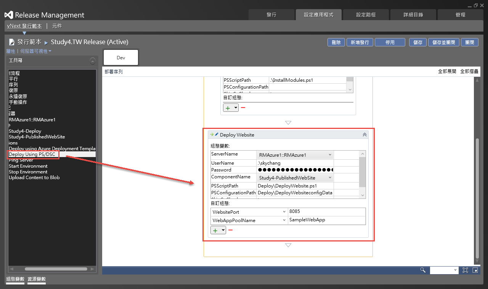
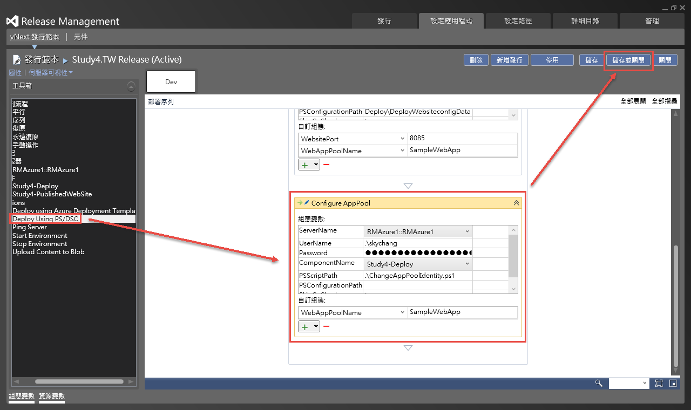

前言
完成了Release Management環境的設定後，接下來我們要進行Release Management元件的設定，那甚麼是元件?
元件
首先，我們回憶一下，我們前面將PowerShell放到專案裡面去，當VSO將Build出來的檔案Build好後，Release Management要抓取Build出來的檔案 ( Build的檔案會放到VSO上，而非直接放到目標的Server上 )，並且透過內建的PowerShell複製到目標VM去。( 內建的PowerShell並不是我們上一章節準備的PowerShell )
所以，這個章節，要做的一件事情，就是告訴Release Management，要把那些東西複製到目標Server，而這一個一個的東西，就被稱為元件。
設定元件
所以，我們要先進入”設定應用程式” => “元件”，並且新增”新的vNext”。

接下來，我們給這個元件一個名稱，這個元件的來源，會是在_PublishedWebsites\Study4.UI.Web\Deploy\的目錄下；這邊要注意一下，其中的Study4.UI.Web，是你之前專案的專案名稱；而這邊這個元件，就是將我們上一章節準備的PowerShell準備拷貝到目標Server去。

接下來，要設定另外一個元件，目標位置是_PublishedWebsites\Study4.UI.Web\這個元件的用意，就是將網站所有的檔案，拷貝到目標Server上。
當然，大家可能會覺得，我的PowerShell原本就是放在整個網站下面阿，那為什麼還要分為兩個元件，其實設定一個元件也是ok的，但這邊主要是為凸顯效果，所以才多設定一個元件。

設定發行範本
接下來，我們要設定新的”vNext發行範本”。

進入後，我們就可以選擇發行路徑、組件定義等等，這些都是之前我們設定過的。

另外，如果這邊勾選的話，未來如果直接從VSO Build，會自動觸發Release Management。

接下來，我們就可以進入發行範本的設定，如下圖，其實他就是一個WF；而在開始設定之前，我們要先把元件加入，如下圖。

然後把我們剛剛設定好的元件連結進來。

接下來，我們要開始設定流程，這個流程會有三個步驟，第一個步驟如下圖。
主要目的是安裝Modules，也就是xWebAdministrator這個Modules，透過這一個步驟，並且呼叫InstallModules.ps1，就會將此Module安裝到PowerShell底下的Module目錄；而透過xWebAdministrator，我們就可以另用它來將檔案佈署到IIS上。
另外，需要特別注意，下圖的部分，有一個地方截圖截不到，下面還有一個SkipCaCheck的欄位，這個欄位要填true；另外，UserName一定要加上.\ 來代表本機，不然會認不得帳號；密碼就是當初建立Azure VM的密碼。

第二步驟要做的就是將Web網站的檔案拷貝到IIS的指定目錄。
另外，需要特別注意，下圖的部分，同樣的有一個地方截圖截不到，下面還有一個SkipCaCheck的欄位，這個欄位要填true；另外，還有另外兩個屬性要記得填。

第三個步驟是設定IIS的權限，需要注意的項目和上面一樣，SkipCaCheck同樣要填true，最下面也還有新的欄位要填寫。

存檔完成後，範本就設定完成了
參考資料
- https://gallery.technet.microsoft.com/scriptcenter/xWebAdministration-Module-3c8bb6be
- http://www.visualstudio.com/get-started/manage-your-release-vs
- http://www.visualstudio.com/get-started/deploy-with-agents-vs
- http://blogs.msdn.com/b/visualstudioalm/archive/2014/11/11/using-release-management-vso-service-to-manage-releases.aspx